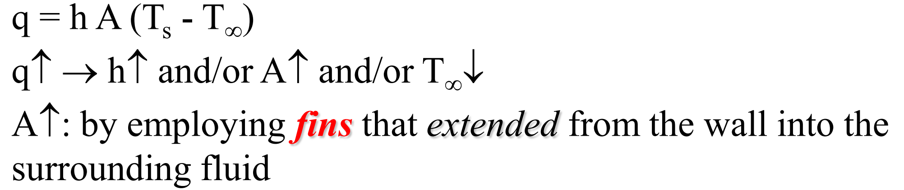
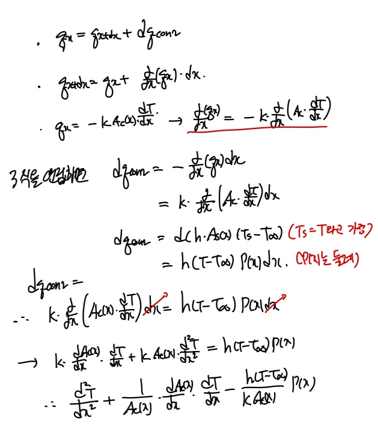
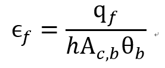
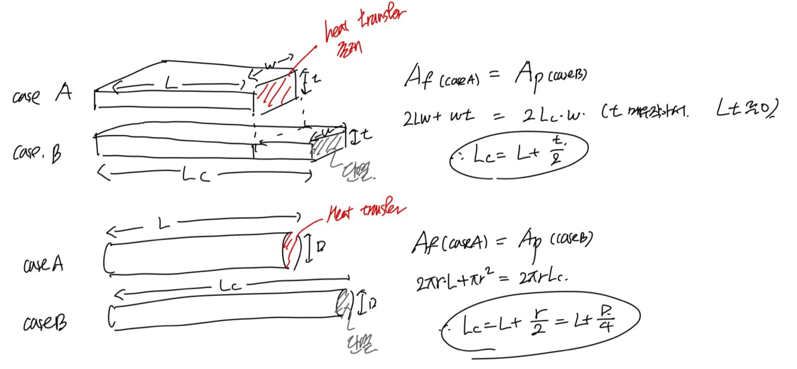
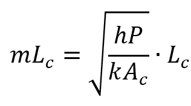
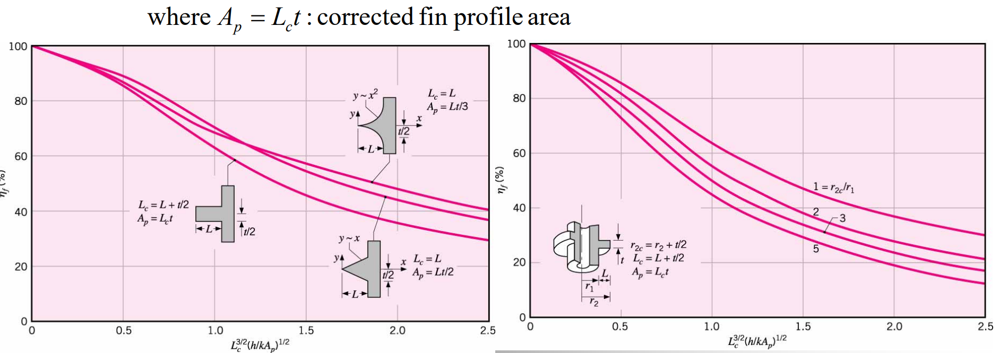

지금까지
Steady state, 1-D conduction processd에서
E generation이 있는 경우, 없는 경우 둘다 분석하고
각각, x Coordinate와 radial coordinate 둘다 분석하였다.
사실 이 과목을 배우는 이유는
열전달의 효율성을 최대로 어떻게 만들 것인가 이다.
지금까지 봐왔던 문제는 모두
고체에 Surface에서 fluid의 convection이 일어나는 경우였다.
그렇다면 Surface에서 Convection으로 열 전달의 효율을 어떻게 높일 수 있을까?

위 Convection식을 통해
사실 다양한 방법이 있는 것을 알 수 있다.
그 중에서 가장 cost-effiective, useful한 경우는 면적을 늘리는 것이다.
이는
FIN
을 통해서 달성 할 수 있다.
밑 그림의 FIN의 dx가 길이인 단면적을 보면
전도가 일어남과 동시에 Convection이 일어남도 알 수 있다.
이를 통해서 한번 식을 세워보자.
![[Heat and Mass transfer] Ch 3 ,1-Dimensional, Steady-State Conduction - Extended surface](./images/img-002.png)
Assumptions
-Steady state
-1-D
-Constant k
-Negligible radiation
-No heat generation
-h is constant

마지막식 =0 이 나온다.
위 식은 Generatl 한 Fin 식이다.
따라서 Geometry, boundary condition에 따라
Simple하게 변형 시킬 수 있다.
Fins of Uniform Cross-Sectional Area (Ac = constant)
![[Heat and Mass transfer] Ch 3 ,1-Dimensional, Steady-State Conduction - Extended surface](./images/img-004.png)
여기에 Boundary condition을 부여해주자
x = 0, T(0) = Tb (Base temperature)
Ac(x) = constant인 경우를 살펴보면
General equation은
![[Heat and Mass transfer] Ch 3 ,1-Dimensional, Steady-State Conduction - Extended surface](./images/img-005.png)
계산의 편의를 위해 T-T∞을
θ(x)라고 치환하고 Excess Temperature라고 부르자.
그리고 대입해주면 간편한 이계도함수로 나타 낼 수 있다.
이제 이계도함수를 공학수학에서 배운 Eigen value로 구하면
다음과 같은 General Solution을 Derive할 수 있다.
![[Heat and Mass transfer] Ch 3 ,1-Dimensional, Steady-State Conduction - Extended surface](./images/img-006.png)
이제 상수들을 알려면 Boundary condition을 대입 해야 겠죠??
먼저, 이전에 언급한
x=0 에서의 온도 Tb (base Temperature)을 대입해주자
![[Heat and Mass transfer] Ch 3 ,1-Dimensional, Steady-State Conduction - Extended surface](./images/img-007.png)
연립방정식을 풀려면 하나 더 있어야된다.
바로 Tip(x=L)에서의 Boundary condition이다.
The thing is there are 4 different boundary condition on the tip.
![[Heat and Mass transfer] Ch 3 ,1-Dimensional, Steady-State Conduction - Extended surface](./images/img-008.png)
Case A: x=L에서 Convection heat transfer이 일어난다고 가정.
Case B: x=L에서 Convection heat transfer=0
Case C: x=L에서 Temperature is given
Case D: L -> ∞, very long fin -> C1 = 0.
하지만 Fin을 장착시키면 당연히 재료값이 많이 들겠죠??
그니까 쓰는 비용대비 효율이 좋아야만 장착해야된다는 말씀.
그렇다면 효율의 기준점이 무엇일까???
1.Fin effectiveness
직관적으로
효율:
단순하게 있을때랑 없을때의 비율
(Cross-sectional Area = constant 일때)

qf = Fin있을때 Heat transfer rate,
h Ac,b (base 면적)
θb = Fin없을때, convection heat transfer rate.
Generally,
효율 >= 2일때, fin이 필요하다고 판단한다.
여기서 이제 위에 Boundary case에 따라서, qf가 결정되겠죠??
ex) Infinity long fin(Case D)의 경우,
![[Heat and Mass transfer] Ch 3 ,1-Dimensional, Steady-State Conduction - Extended surface](./images/img-010.png)
효율의 증가하는 경우의수는 제곱근 안에있는 변수들일 것이다.
1. k 증가, k높은 material 사용해야함.
2. P/A 증가 = Thin fin
3. h 감소, water보다 air에서 효율 증가.
그렇다면, 이번에는
이전 post에서 언급한 Thermal resistance의 개념으로 효율을 표현해보자.
Fin이 있는경우,
![[Heat and Mass transfer] Ch 3 ,1-Dimensional, Steady-State Conduction - Extended surface](./images/img-011.png)
온도변화는 Base에서 부터 바깥 온도 일 것이다.
Fin이 없는경우,
Base면적 기준으로, Convection만 일어나겠죠?
그 경우 Convection Thermal Resistance는
![[Heat and Mass transfer] Ch 3 ,1-Dimensional, Steady-State Conduction - Extended surface](./images/img-012.png)
따라서, 효율을 Resistance로 표현해보면,
![[Heat and Mass transfer] Ch 3 ,1-Dimensional, Steady-State Conduction - Extended surface](./images/img-013.png)
즉, 열로 나타내면 효율은,
Fin있/Fin없 이지만
저항으로 나타내면,
Fin없/Fin있
이라는 사실.
이제 두번째 효율 기준점으로 가보자.
2.Fin efficiency
효율 = Fin있을때 열/ Maximum possible heat transfer rate.
여기서 Maximum possible이란,
Fin의 겉표면의 모든 온도가 Base의 온도
즉, 시작 온도와 같다는 의미이다.
말도 안되지만, 이럴 경우 Convection이 더 잘 일어나서,
우리가 Fin을 설치하는 효과가 더 잘 일어나겠죠??
[Remind]
Fin을 설치하는 이유는 고체의 표면에서
convection을 증가시키기.
따라서, 면적을 늘려주는것.
하지만 Fin을 설치하면 conduction으로 인해서
표면의 온도가 감소하여 결국 Convection의 효과가 감소한다.
Therefore,
Maximum heat transfer의 경우, 표면의 온도가 Conduction에 의해서
감소하지 않는 경우라고 정의하는것(실제 불가능)
분모가 분자의 max인 경우이므로,
0< Fin efficiency < 1
자 이제 효율을 수식을 나타내면.
![[Heat and Mass transfer] Ch 3 ,1-Dimensional, Steady-State Conduction - Extended surface](./images/img-014.png)
이전의 Fin effectiviness와 비교시,
convectoin면적이
Base Area(Ac,b) -> Fin total surface Area (Af)로 전환
아까전에 Fin thermal resistance 식과 efficiency 를 합쳐주면.
![[Heat and Mass transfer] Ch 3 ,1-Dimensional, Steady-State Conduction - Extended surface](./images/img-015.png)
ex) Straight fin of Ac 일정, adabatic at x=L (Case b)
![[Heat and Mass transfer] Ch 3 ,1-Dimensional, Steady-State Conduction - Extended surface](./images/img-016.png)
우리가 효율을 구할때, 꽤 simple한 모양인 이유는 전부
Case B (adiabatic)의 qf 가 MtanhML로 간편한 모양이라서 그렇다.
만약에 CaseA의 경우의 효율을 구한다면, 식이 굉장히 더러울 것이다;;
따라서, Case A (tip에서 열전달 존재)-> Case B (tip에서 단열)
로 Correct Length를 이용하여 전환한다.
[Case A : Fin끝에서 열전달 존재, Case B: 끝에서 단열]

핵심은 길이가 짧은 경우의 끝에서 열전달 = 길이가 긴녀석의 추가된 겉면적의 열전달
당연히 오차가 있겠지만 이게 가능한 이유는, 끝부분으로 갈수록
Conduction, Convection이 이미 많이 일어나고 지나온 부분이라서
T가 T∞과 차이가 크지 않을 것이다.
따라서 Convection heat transfer rate이 작단 이야기이다.
이렇게 CaseB로 전화해주게 되면 앞에서 말했다 싶이.
Heat transfer 값이 굉장히 심플하다 -> 효율값 굉장히 심플
Therefore, 효율은 새로운 Corrected Fin length(Lc)를 이용해 표현 가능.
![[Heat and Mass transfer] Ch 3 ,1-Dimensional, Steady-State Conduction - Extended surface](./images/img-018.png)
원래 위표를 보면 m은 다음과 같이 정의된다.

Rectangular fin 이 w>>>>t 이라면?
P = 2w+
2t
= 2w
여기서 Fin profile area(Ap = Lc x t) 를 새롭게 정의하면
![[Heat and Mass transfer] Ch 3 ,1-Dimensional, Steady-State Conduction - Extended surface](./images/img-020.png)
여기서 한가지 질문이 공부하시면 들수밖에 없습니다.
굳이 왜? Lc를 루트 안으로 넣어줘서 Ap를 또 새롭게 정의하고 만들었을까??????
그 이유는 직사각형 뿐만아니라 다양한 geometry에 일반화시켜 Graph로 Plot하기 위해서 였다는것...
